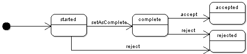

| Overview | Package | Class | Use | Tree | Deprecated | Index | Help |
|
|
||||||||||
| PREV CLASS NEXT CLASS | FRAMES NO FRAMES | ||||||||||
| SUMMARY: NESTED | FIELD | CONSTR | METHOD | DETAIL: FIELD | CONSTR | METHOD | ||||||||||
A session interaction is a container that represents the run state of a UI service integrated in the workflow. This run state is persistent and is composed of three parts:
For a UI service to be integrated into the workflow, the names and documentation
of both the input and output parameters must be specified in the document
module.xml.
See Workflow modeling for more information.
The following diagram shows the states of a work item:

When a user starts a work item, a new session is created on the application server
with an associated interaction. For the UI service to obtain this interaction,
the method Session.getInteraction
must be invoked.
This interaction's input parameters are assigned values according
to the mapping specified by the user task definition in the workflow model.
When the work item is considered to be complete
the UI service must invoke the method complete.
As long as the work item is not yet in the complete state (meaning
that the user will has work to perform), the work item cannot be finalized.
If there is no work to be performed for the work item, it can be set to the
complete state as soon as the first HTTP request is handled.
Once the work item is complete, the user can either
accept or reject it.
By default, 'Reject' is disabled (the button is not displayed); in the workflow model, it can be enabled in the user task definition.
The session interaction is persistent, thus if the user closes the browser or logs out, or if the server is restarted, the last saved state can be used by a UI service to correctly restore the same position when the user returns to the work item.
If a UI service is composed of more than one simple step, it is recommended to use the appropriate methods to save the state at the end of each step and to retrieve this state in the first HTTP request if the work item is continued later. It is important for UI services that are integrated with workflows to always use session interactions.
com.orchestranetworks.workflow,
Integration with workflow| Method Summary | |
void |
complete(InteractionHelper.ParametersMap outputParameters)
Sets this interaction to the state 'complete'. |
InteractionHelper.ParametersMap |
getInputParameters()
Returns the initial input parameters of this interaction. |
InteractionHelper.ParametersMap |
getInternalParameters()
Returns the internals parameters of this interaction. |
ServiceKey |
getServiceKey()
Returns the service key of this interaction. |
boolean |
isComplete()
Returns true if this interaction has been set to 'complete'. |
void |
setInternalParameters(InteractionHelper.ParametersMap internalParameters)
Sets the internal parameters of this interaction. |
| Method Detail |
public InteractionHelper.ParametersMap getInputParameters()
throws InteractionException
This method can be used by a UI service started by a work item (for example, a trigger, an access rule, or on a specific service context) to read the input interaction properties.
InteractionException
public ServiceKey getServiceKey()
throws InteractionException
This method can be used to test the invocation context of the interaction (creation, validation, editing, etc.) and perform specific operations according to the different contexts.
InteractionException
public InteractionHelper.ParametersMap getInternalParameters()
throws InteractionException
null by default).
Use setInternalParameters
to initialize it.
This method can be used to read the internal interaction properties, when invoked in the context of the UI service started by a workflow work item (for example, a trigger, an access rule, or on a specific service context).
InteractionException
public void setInternalParameters(InteractionHelper.ParametersMap internalParameters)
throws InteractionException
At the end of the work item, when the user accepts or rejects, the internal parameters which do not already exist in the output parameters are copied into the output parameters. Thus, internal parameters are available in the output of the interaction.
This method can be used to update the internal interaction properties, when invoked in the context of the UI service started by a workflow work item (for example, in a trigger, in an access rule or on a specific service context).
internalParameters - specifies the internal parameters, used during the execution of the service.
InteractionException
public void complete(InteractionHelper.ParametersMap outputParameters)
throws InteractionException
In a specific UI service, this method must be invoked so that the 'Accept' button is displayed.
If this method is called several times, the output parameters are updated incrementally (existing entries are updated and new entries are added).
outputParameters - specifies the result of the interaction; it must conform to
the declaration of the service (properties with the
output attribute set to true).
InteractionException - if the interaction is not found, or
if an output parameter is not found in the associated service declaration.
public boolean isComplete()
throws InteractionException
true if this interaction has been set to 'complete'.
true if the interaction has been set as complete, else returns false.
InteractionExceptioncomplete(com.orchestranetworks.interactions.InteractionHelper.ParametersMap)
|
|
||||||||||
| PREV CLASS NEXT CLASS | FRAMES NO FRAMES | ||||||||||
| SUMMARY: NESTED | FIELD | CONSTR | METHOD | DETAIL: FIELD | CONSTR | METHOD | ||||||||||
(report a bug)
EBX5 Version 5.4.0 Fix 002 [0907:0001]
Copyright Orchestra Networks 2000-2013. All rights reserved.